Коротко
Layan Green Park · Фаза 1 в цифрах
О проекте
Что это за место
Layan Green Park — первый экологичный семейный апарт-отель премиум-класса на Пхукете и первый кондо-отель в Таиланде с сертификатом зелёного строительства EDGE: солнечные панели, бассейны без хлора NatureSwim, потолки 2,7–3,15 м. Управление — отель La Green Hotel & Residence 5* в коллекции WorldHotels (рейтинг Booking 8,6).
Внутри — 5 бассейнов, 1 350 м² для спорта с тренажёрами Technogym, спа с хаммамом и баней, детский клуб с аниматорами и бассейном с горками, 5 ресторанов, бары у бассейна и на крыше, кафе правильного питания.
Rental pool: управляющая сдаёт квартиру, владелец получает 60% чистой прибыли, плюс 30 дней в год для своего отдыха. Фактическая доходность Фазы 1 за 2024 год: студии 8%, 1 спальня 9%, 2 спальни 6,5%, 3 спальни 9,5% годовых.
Реальные кейсы владельцев: студия куплена за $116 000 в 2023 году и продана за $162 000 в 2025-м; 1 спальня — с $174 000 до $243 000 за 3 года; 3 спальни — с $415 000 до $775 000. Плюс доход от аренды 8% в год.
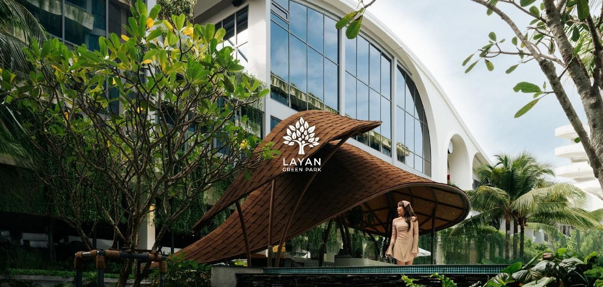
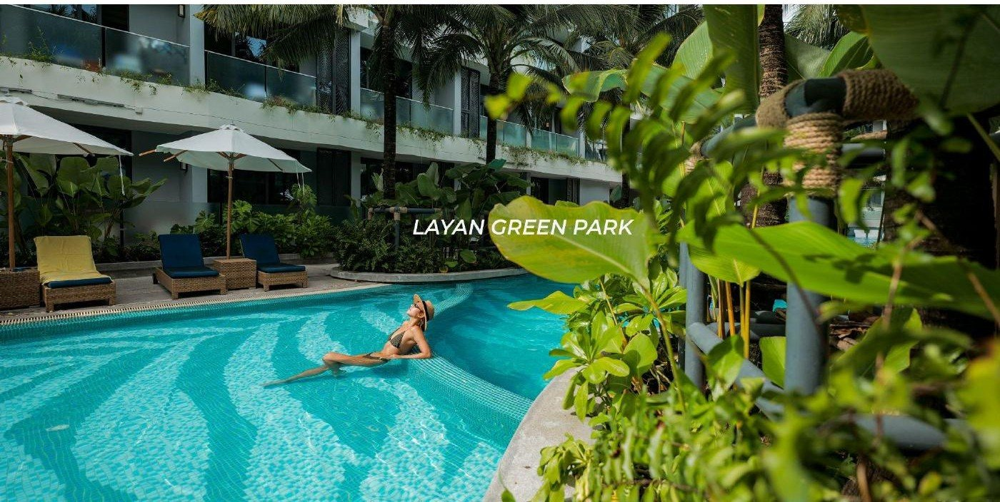
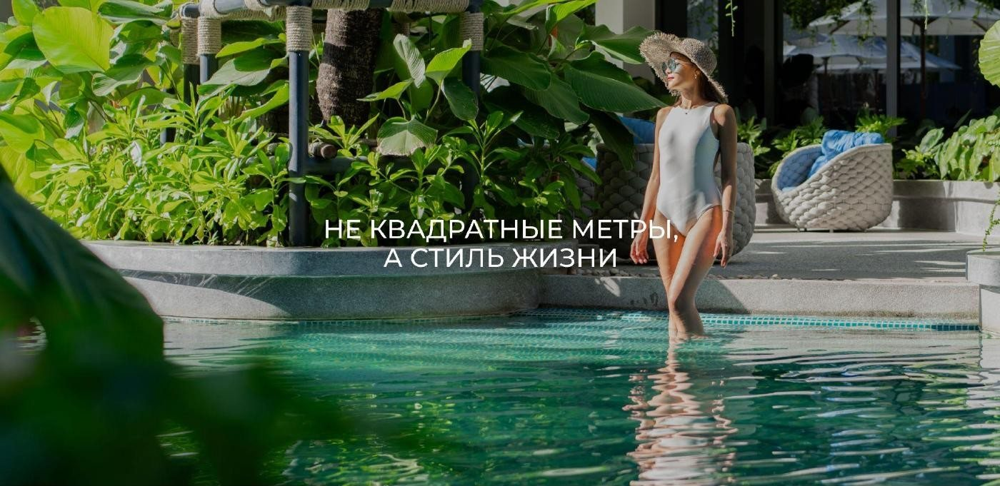
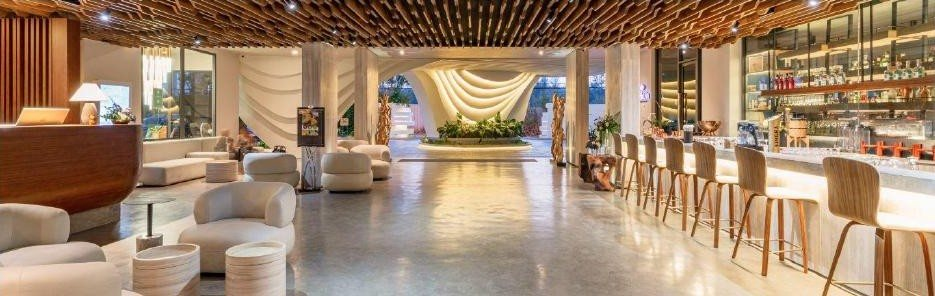
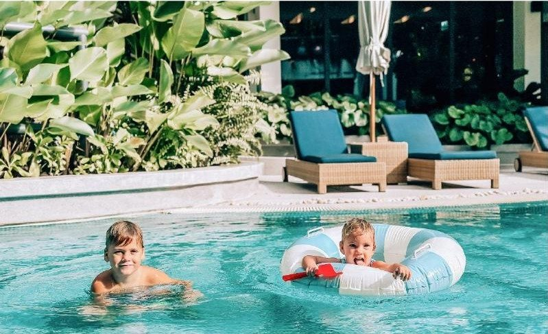
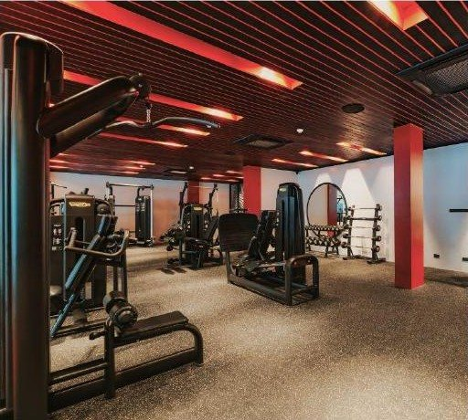
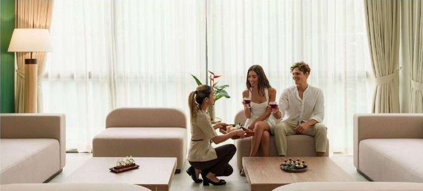
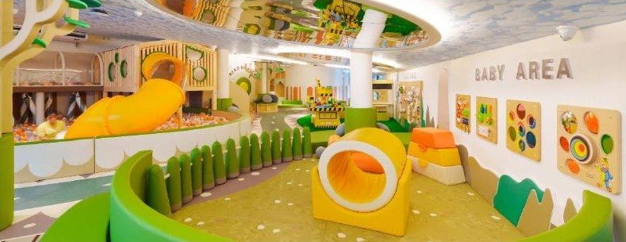
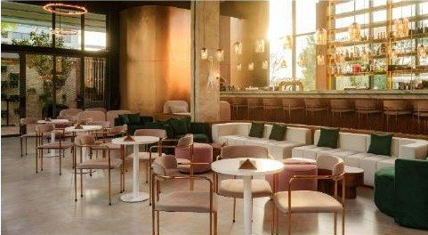
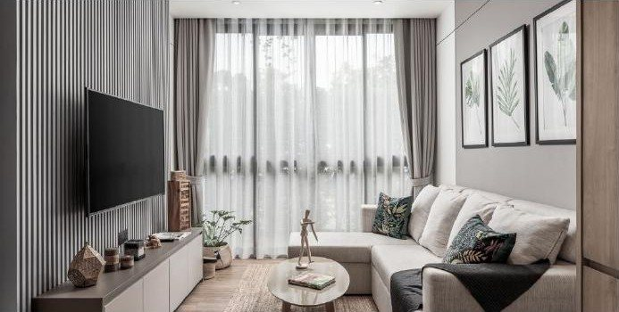
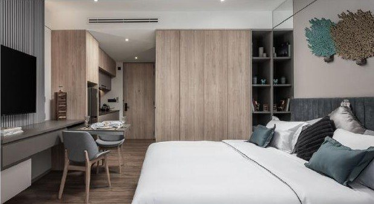
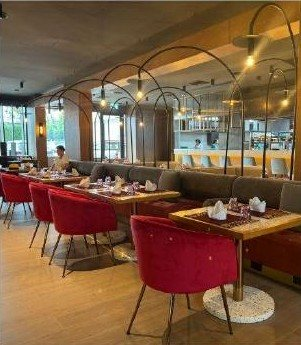
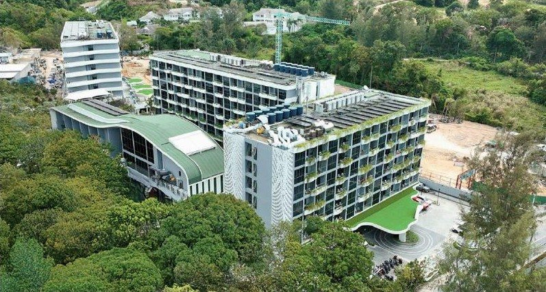
Цены
Что есть в продаже
Прайс застройщика от 02.11.2026. Дуплексы Фазы 1 проданы. Курс: 1 ฿ ≈ 2,6 ₽. Наличие меняется — пришлю актуальный прайс.
Условия покупки
График оплаты
Рассрочка после сдачи: ставка 3% в первый год, 4% во второй, 5% в третий. Или 100% оплата: бронь 200 000 ฿ и остаток в течение 14 дней.
Расходы
Что ещё учесть
Локация
Что рядом
Как мы работаем
Покупка через «Этажи»